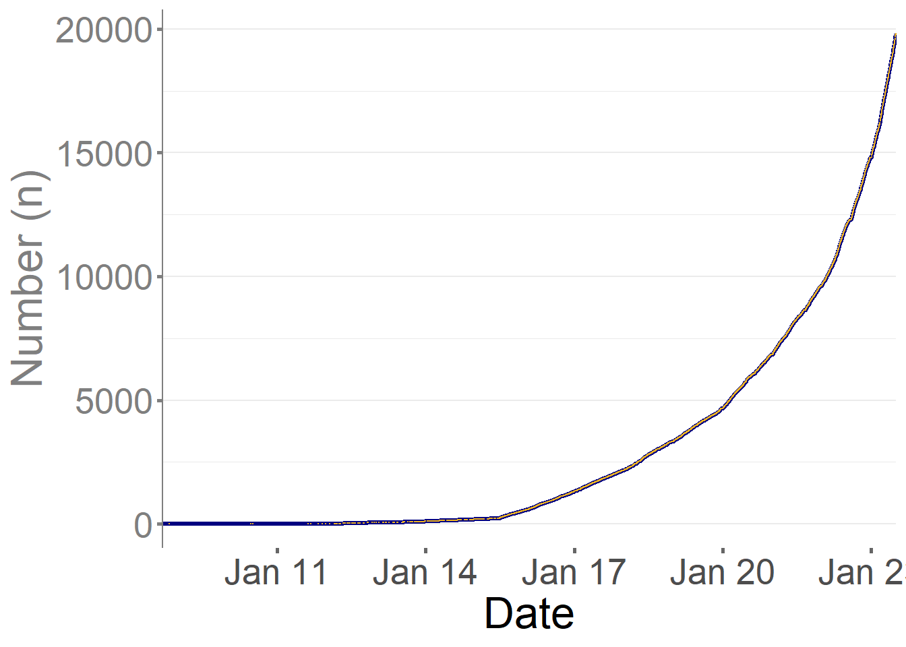
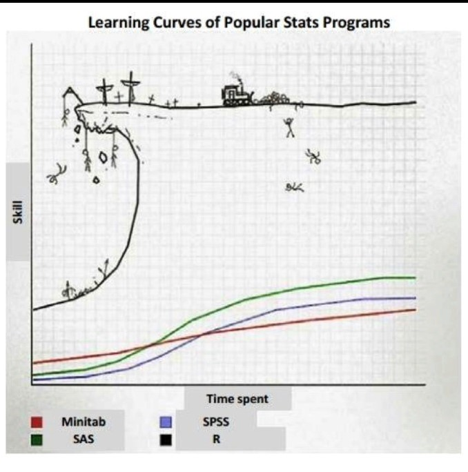
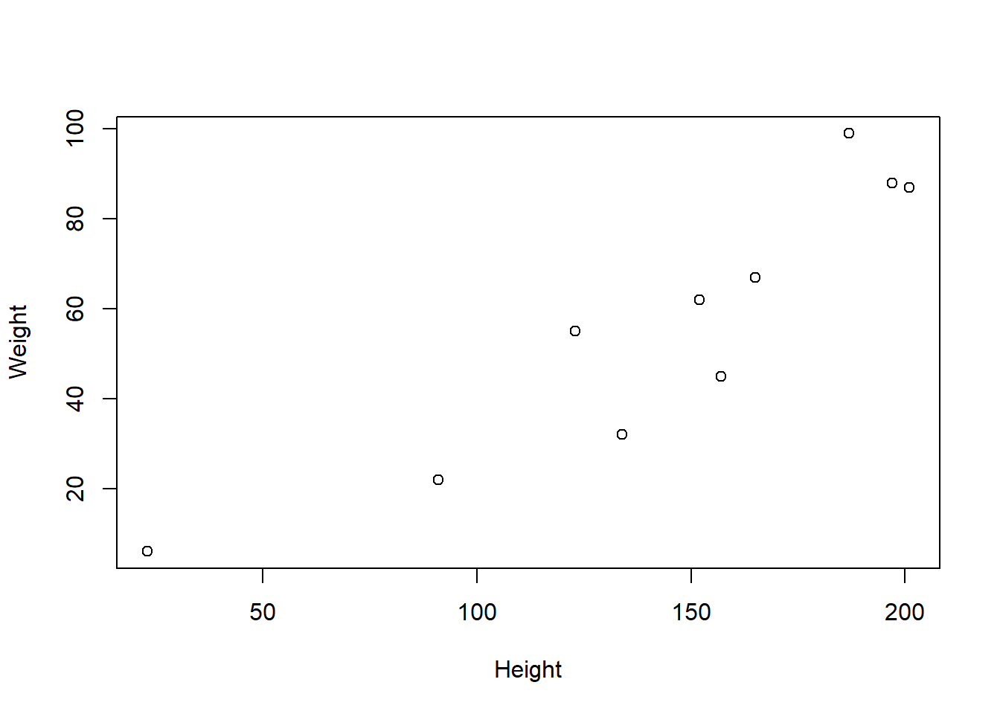
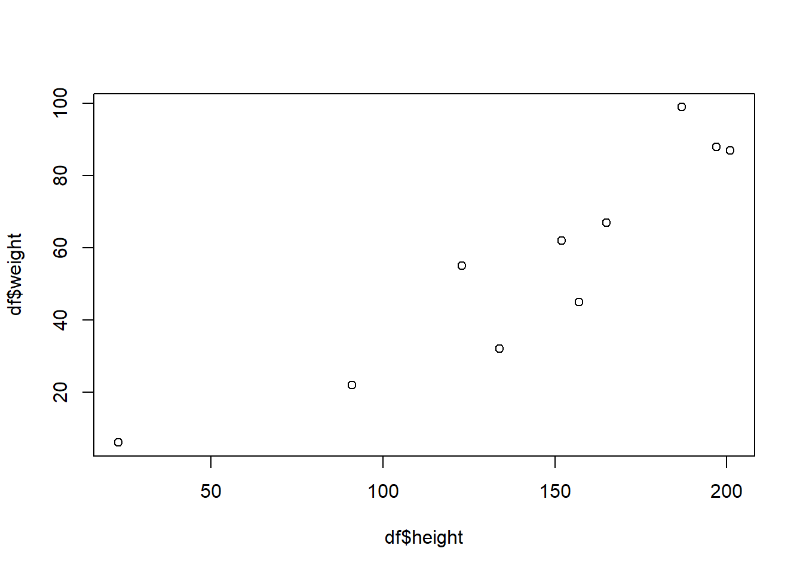
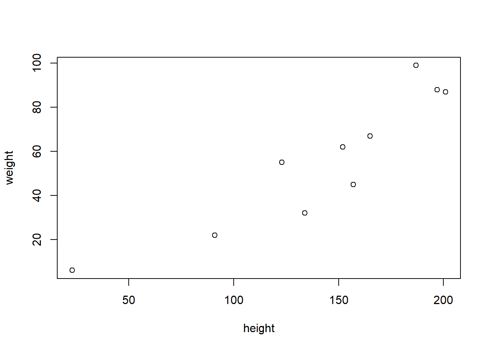

Introduction to R

Welcome to Statistical Computing in R! (Beginner-Intermediate) organised by the Sector for Biostatistics and Data Respository, National Instititues of Health.
Assumptions and pre-requisites
The 2-day workshop as you can imagine is very short. While, we do not assume a significant background in statistics we assume you:
- You know the basics of computing environments
You have access to a computing environment (i.e. locally on a laptop or working in the cloud)
You generally feel comfortable with installing and working with software
- You know the basics of statistics
The central dogma (estimates, standard errors, basic distributions, etc.)
Key statistical terms and methods
Differences between estimation vs testing vs prediction
Know how to fit and interpret basic statistical models (e.g. linear models)
- Know some basics of at least one programming language
While we will be covering very briefly some basic of R and setuping up your environment, we will not be able to spend significant time covering these concepts and technologies. Data analyses you will perform will also often involve significant data extraction, cleaning, and transformation. We will learn about tools to do all of this, but hopefully most of this sounds familiar to you so you can focus on the concepts we will be teaching around best practices for statistical computing.
Some resources that may be useful if you feel you may be missing pieces of this background:
- Statistics - Mathematical Biostatistics Bootcamp I (Coursera); Mathematical Biostatistics Bootcamp II (Coursera)
- Basic Data Science - R for Data Science); Data Science Specialization (Coursera)
- Rmarkdown - Rmarkdown introduction
Getting set up
You must install R and RStudio on your computing environment in order to complete this workshop. We assume you have already setup your environment (you have been emailed instructions last week).
However if you have not, here is a quick recap:
These are two different applications that must be installed separately before they can be used together:
R is the core underlying programming language and computing engine that we will be learning in this course
RStudio is an interface into R that makes many aspects of using and programming R simpler
Both R and RStudio are available for Windows, macOS, and most flavors of Unix and Linux. Please download the version that is suitable for your computing setup.
How to Download R for Windows
Go to https://cran.r-project.org and
Click the link to “Download R for Windows”
Click on “base”
Click on “Download R 4.2.1 for Windows”
The version in the video is not the latest version of R. Please download the latest version.

How to Download R for the Mac
Goto https://cran.r-project.org and
Click the link to “Download R for (Mac) OS X”.
Click on “R-4.2.1.pkg”
The version in the video is not the latest version of R. Please download the latest version.

How to Download RStudio
Goto https://rstudio.com and
Click on “Products” in the top menu
Then click on “RStudio” in the drop down menu
Click on “RStudio Desktop”
Click the button that says “DOWNLOAD RSTUDIO DESKTOP”
Click the button under “RStudio Desktop” Free
Under the section “All Installers” choose the file that is appropriate for your operating system.
NOTE: The video shows how to download RStudio for the Mac but you should download RStudio for whatever computing setup you have

Download the Tidyverse package
Throughout the course, we will make use of numerous R add-on packages that must be installed over the Internet. Packages can be installed using the install.packages() function in R. For example, to install the tidyverse package, you can run
Learning Objectives
The goal is by the end of the workshop, students will be able to:
Install and configure software necessary for a statistical programming environment
Write and debug code in base R and the tidyverse
Build basic data visualizations using R and the tidyverse
Run statistical tests in the R programme
Workshop logistics
Speaker & Facilitators
Speakers
Vivek Jason
Jason is a gazetting Public Health Physician passionate about epidemiology, infectious diseases and data science. He spends his time between coding, playing with his toddler and pondering the fate of the universe.
Ang Swee Hung
Swee Hung is a training Public Health Physician that works heavily in the fields of non-communicable disease epidemiology. Renowned for her calmness under pressure- Swee Hung also enjoys the serenity of long drives.
Evi Diana
Evi is a statistician with vast expertise in complex sample analysis and clustering. The only person whose math you should trust in this workshop- Evi always has a smile on her face.
Schedule
| Date | Time | Topic |
|---|---|---|
| 10.7.2022 (Monday) | 08.30 am - 09.00 am | Registration |
| 9.00 am - 10.00 am | Introduction to R Software | |
| 10.00 am - 12.30 pm | Data wrangling | |
| 12.30 pm - 02.00 pm | Break | |
| 02.00 pm - 04.30 pm | Data Visualization | |
| 11.7.2022 (Tuesday) | 08.00 am – 08.30 am | Registration |
| 08.30 am - 11.30 am | Hypothesis testing | |
| 1.00 pm - 02.15 pm | Break | |
| 02.15 pm - 04.30 pm | Introduction to Regression | |
| 04.30 pm - 05.00 pm | Q&A |
What will we learn in the next hour?
Some backround on R
Understanding R and RStudio
Grammar of R
Taking the next step
What is…

a software package for statistical computing and graphics
a collection of 18,636packages (as of September 2020)!
a (not ideal) programming language
a work environment, widely used, POWERFUL!
Why use R
It’s free!
It runs on a variety of platforms including Windows, Unix and MacOS.
It provides an unparalleled platform for programming new statistical methods in an easy and straightforward manner.
It contains advanced statistical routines not yet available in other packages.
It has state-of-the-art graphics capabilities
The next step for open-science initiatives chief being reproducibility
Replication, whereby scientific questions are examined and verified independently by different scientists, is the gold standard for scientific validity.
Replication can be difficult and often there are no resources to independently replicate a study.
Reproducibility, whereby data and code are re-analyzed by independent scientists to obtain the same results of the original investigator, is a reasonable minimum standard when replication is not possible.
Reproducibility and Literate Programming
One basic idea to make writing reproducible reports easier is what’s known as literate statistical programming (or sometimes called literate statistical practice). This comes from the idea of literate programming in the area of writing computer programs.
The idea is to think of a report or a publication as a stream of text and code.
The text is readable by people and the code is readable by computers.
The analysis is described in a series of text and code chunks.
Each kind of code chunk will do something like load some data or compute some results.
Each text chunk will relay something in a human readable language.
There might also be presentation code that formats tables and figures and there’s article text that explains what’s going on around all this code. This stream of text and code is a literate statistical program or a literate statistical analysis.
CRAN:Comprehensive R Archive Network
At a higher level one “limitation” of R is that its functionality is based on consumer demand and (voluntary) user contributions. If no one feels like implementing your favorite method, then it’s your job to implement it (or you need to pay someone to do it). The capabilities of the R system generally reflect the interests of the R user community. As the community has ballooned in size over the past 10 years, the capabilities have similarly increased. This can be seen in the exponential increase in packages on CRAN

History time
S was developed at Bell Labs, starting in the 1970s
R was created in the 1990s by Ross Ihaka and Robert Gentleman
R was based on S, with code written in C
S largely was used to make good graphs – not an easy thing in 1975. R, like S, is quite good for graphing
Design of the R System
The primary R system is available from the Comprehensive R Archive Network, also known as CRAN. CRAN also hosts many add-on packages that can be used to extend the functionality of R.
The R system is divided into 2 conceptual parts:
- The “base” R system that you download from CRAN:
- Everything else.
R functionality is divided into a number of packages.
The “base” R system contains, among other things, the
basepackage which is required to run R and contains the most fundamental functions.The other packages contained in the “base” system include
utils,stats,datasets,graphics,grDevices,grid,methods,tools,parallel,compiler,splines,tcltk,stats4.There are also “Recommended” packages:
boot,class,cluster,codetools,foreign,KernSmooth,lattice,mgcv,nlme,rpart,survival,MASS,spatial,nnet,Matrix.
When you download a fresh installation of R from CRAN, you get all of the above, which represents a substantial amount of functionality. However, there are many other packages available:
There are over 10,000 packages on CRAN that have been developed by users and programmers around the world.
There are also many packages associated with the Bioconductor project.
People often make packages available on their personal websites; there is no reliable way to keep track of how many packages are available in this fashion.
At its core R is a programming language
Concepts such as loops and functions speed up and simplify analytic processes
If you want R to be (relatively) fast, take advantage of vector operations; e.g., use the replicate command (rather than a loop) or the apply function.
optimising computation is critical to newer processes i.e. big data
R is object oriented
e.g., MyModel <- lm(wt ~ ht, data = mydata)
then hist(MyModel$residuals)
Note that lm(wt ~ ht*age + log(bp), data = mydata) regresses wt on ht, age, the ht-by-age interaction, and log(bp)
There is no need to create the interaction or the log(bp) variable outside of the lm() command
another e.g.
mod1 <- lm(wt ~ ht*age + log(bp), data = mydata)
mod2 <- lm(wt ~ ht + log(bp), data = mydata)
anova(mod2, mod1) gives a nested/ interaction F-test
Limitations
fresh non-coders may find it difficult at first , the curve is steep especially if you have no background
hundreds of packages mean learning 100s of different things and styles - analysis is much more transient
SPSS, STATA use a much more ordered approach - fresh non-coders may find it difficult at first
generally a intepreted language (vs compiled), this makes certain operations clunky and slow like looping

Nonetheless The R paradigm is different- its uses a more iterative approach and as such analysis is more flexible, makes a more in depth inquiry of data Mastery is key to tapping the potential of data science in real-world and research settings The first key to mastery of R is….
UNINSTALL SPSS AS.. QUICKLY.. AS.. YOU.. CAN!!

Rstudio
- An Integrated Development Environment (IDE) for R
- A gift, from J.J. Allaire (Macalester College, ’91) to the world
- An easy (easier) way to use R
- Available as a desktop product or, run off a server or cloud
- Recently renamed as Posit- to include Python, VS and Quatro
- Free to a degree!

RStudio environment

Setting a working directory
Check you working directory by
You can then set your working directory like this
A relative path should look like this
There are even better practices for sustainability and reproducibility such but we wont cover those practices here. You can find more information in this post
Reading data into R
This section demonstrates the fundamental functions required to read and write data in R.
In base R, there are key functions for reading data:
read.table() & read.csv(): used for reading tabular data
readLines(): used for reading lines from a text file
Corresponding functions exist for writing data:
write.table(): used to write tabular data to text files or connections, such as CSV
writeLines(): used to write character data line-by-line to a file or connection
Let’s attempt to read data into R using the read.csv() function.
df <- read.csv("data/yourfilename.csv")#this is just an exampleYou can even pull a csv straight from the web
df <- read.csv("https://raw.githubusercontent.com/MoH-Malaysia/data-darah-public/main/newdonors_state.csv")You can export he above csv to you computer by
To extract a specific column, we can use the $ symbol:
df$hospitalNULLAlmost all imaginable formats can be imported/ exported into R. For a more in depth explanation you can have a look at this book chapter.
Base R Grammar
Results of calculations can be stored in objects using the assignment operators: An arrow (<-) formed by a smaller than character and a hyphen without a space! The equal character (=).
Object names cannot contain `strange’ symbols like !, +, -, #.
A dot (.) and an underscore ( ) are allowed, also a name starting with a dot.
Object names can contain a number but cannot start with a number.
R is case sensitive, X and x are two different objects, as well as temp and temP.
Lets do some coding
Simple calculations
5[1] 52+5[1] 7log(5)[1] 1.609438Storing objects
Store a number
x <- 2
x[1] 2Try it with =
x=2
x[1] 2Same results
Store an object
x <- "Hello"
x[1] "Hello"Store a string of numbers
x <- c(1:10)
x [1] 1 2 3 4 5 6 7 8 9 10Check the string and subset some values based on criteria
x>8 [1] FALSE FALSE FALSE FALSE FALSE FALSE FALSE FALSE TRUE TRUEx < 5 [1] TRUE TRUE TRUE TRUE FALSE FALSE FALSE FALSE FALSE FALSEx[(x>8) | (x<5)][1] 1 2 3 4 9 10Vectors
Write a vector of weights
weight <- c(55, 67, 99, 87, 62, 45, 32, 6, 22, 88)Subset the third value
weight[3][1] 99Subset the 4th to 6th value
weight[4:6][1] 87 62 45Define another vector of weights
height <- c(123, 165, 187, 201, 152, 157, 134, 23, 91, 197)Estimate a BMI
bmi <- weight/((height/100)^2)
bmi [1] 36.35402 24.60973 28.31079 21.53412 26.83518 18.25632 17.82134
[8] 113.42155 26.56684 22.67515Descriptive of the vector
length(height)[1] 10mean (weight)[1] 56.3var(height)[1] 2951.333Matrices
Define a new vector
obs <- 1:10Join them into a matrix
m <- cbind(obs, height, weight, bmi)Describe the matrix
typeof(m)[1] "double"class(m)[1] "matrix" "array" is.matrix(m)[1] TRUEdim(m)[1] 10 4Quick and dirty plots in base R
xplot <- plot(height, weight, ylab="Weight", xlab="Height")
xplotNULLDataframes
Convert the earlier matrix into a df
df <- as.data.frame(m)Check the column names
names(df)[1] "obs" "height" "weight" "bmi" Summarise the columns
summary(df) obs height weight bmi
Min. : 1.00 Min. : 23.0 Min. : 6.00 Min. : 17.82
1st Qu.: 3.25 1st Qu.:125.8 1st Qu.:35.25 1st Qu.: 21.82
Median : 5.50 Median :154.5 Median :58.50 Median : 25.59
Mean : 5.50 Mean :143.0 Mean :56.30 Mean : 33.64
3rd Qu.: 7.75 3rd Qu.:181.5 3rd Qu.:82.00 3rd Qu.: 27.94
Max. :10.00 Max. :201.0 Max. :99.00 Max. :113.42 Some other importannt grammar
- ls() lists all the function objects in the environment
ls()- rm() removes a particular function, rm(list=ls()) empties the environment
rm(x)Special characters
NA: Not Available (i.e. missing values)
NaN: Not a Number (e.g. 0/0)
Inf: Infinity
-Inf: Minus Infinity.
For instance 0 divided by 0 gives a NaN, but 1 divided by 0 gives Inf.
There are many ways to skin a cat in R
For instance
mean(df$height) [1] 143Or
with(df, mean(height))[1] 143Or
mean(height, data=df)[1] 143Or for a plot you could
plot(df$height,df$weight)
or
with(df, plot(height,weight)) 
or
plot(weight~height, data=df)
Of course not every thing will work
plot(height, weight, data=df)Warning in plot.window(...): "data" is not a graphical parameterWarning in plot.xy(xy, type, ...): "data" is not a graphical parameterWarning in axis(side = side, at = at, labels = labels, ...): "data" is not a
graphical parameter
Warning in axis(side = side, at = at, labels = labels, ...): "data" is not a
graphical parameterWarning in box(...): "data" is not a graphical parameterWarning in title(...): "data" is not a graphical parameter
A word on the tidyverse
- The tidyr and dplyr packages handle SQL-ytpe work: merging files, extracting subsets, etc.
#install tidyerse
install.packages("tidyverse")
#load dtidyverse
library(tidyverse)
#wranggle data
sub_df <- df %>% filter(bmi>20) %>%
mutate(BMI=bmi*bmi)#takes a sample of size 5000, extracts only the rows for which age > 18, and saves the result in newNCHSThe tidyverse framework is AMAZING and we will focus on utilising this framework for the remainder of this workshop.
Nobody remembers everything
First thing to check is CRAN- look for documentation of package
type ? in console
Stackoverflow, Rstudio forum etc
REMEMBER R IS ALL ABOUT COMMUNITY
Acknowledgements
Material for this lecture was borrowed and adopted from
Additional Resources
- Programming in R
- Data viz in R
- Extensions to R